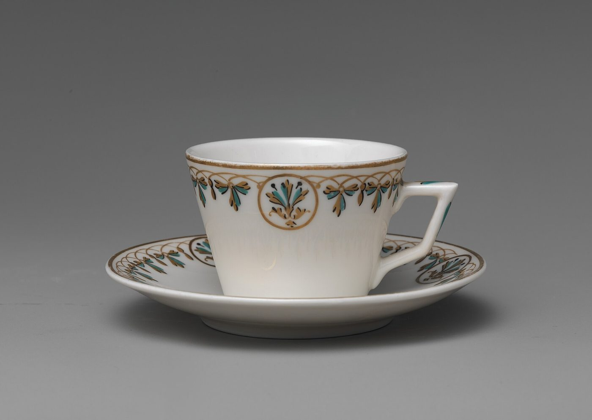
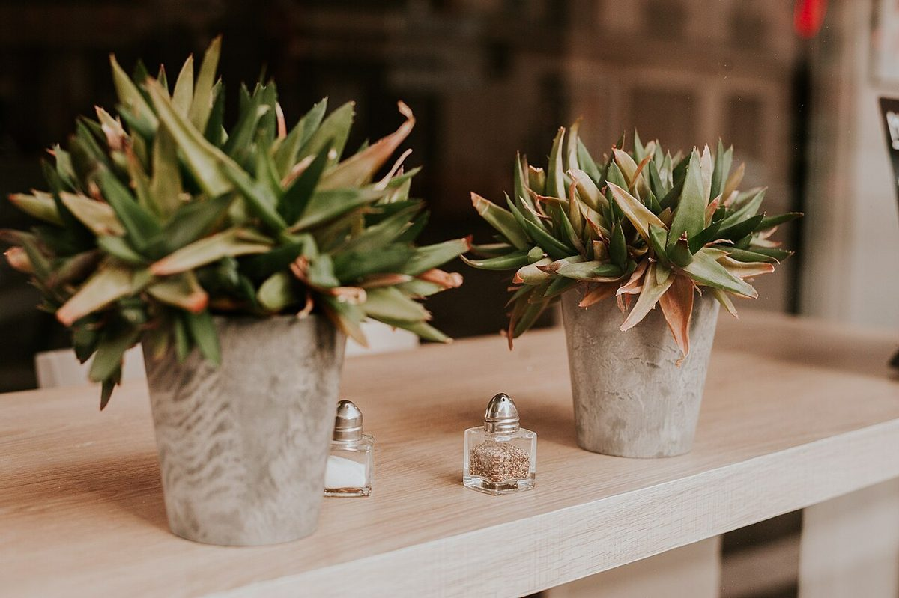
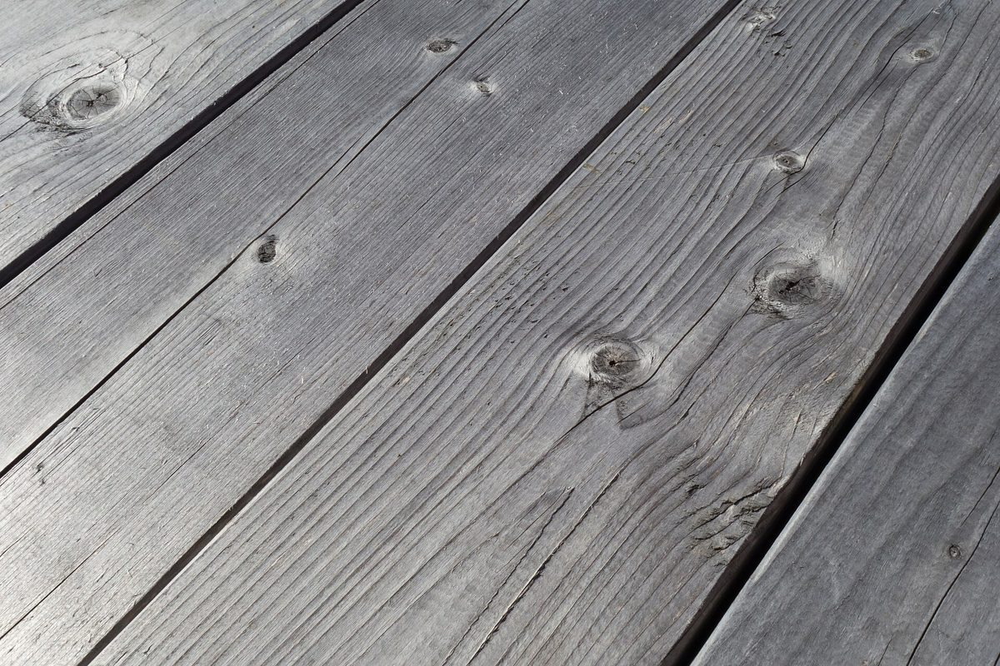
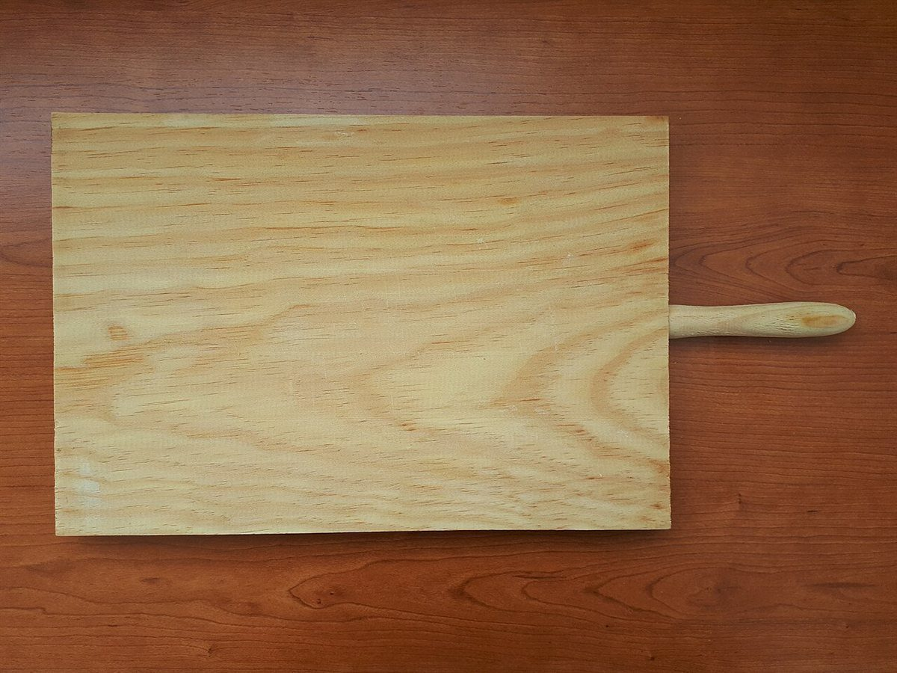
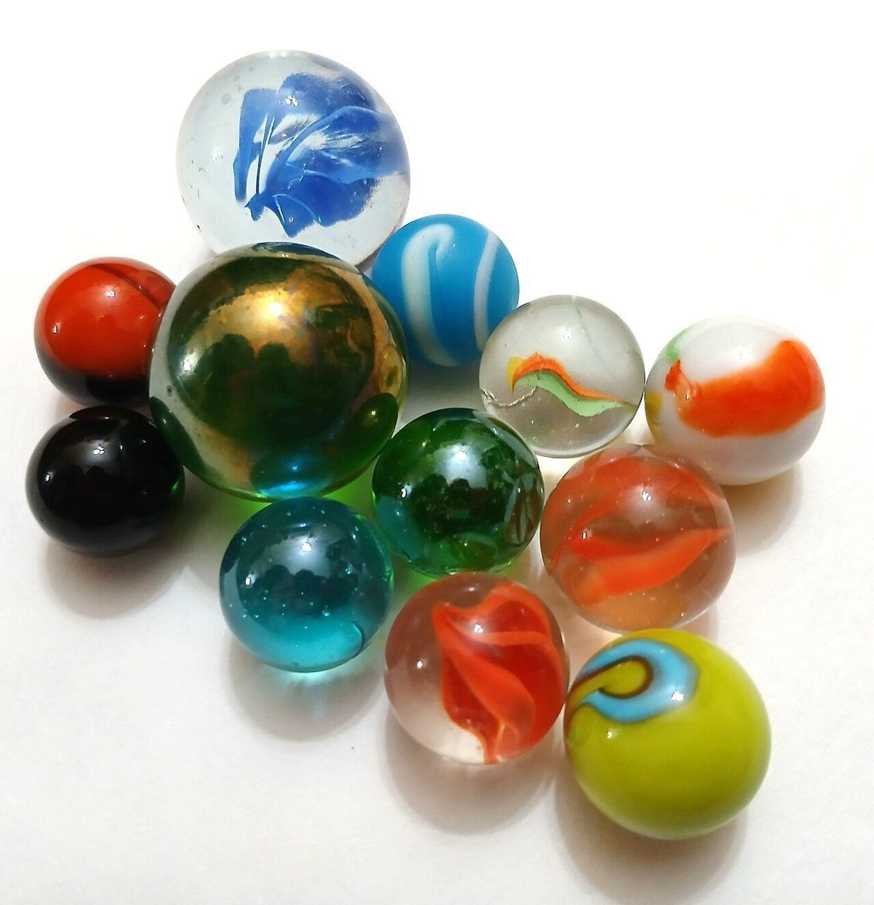

店のこと
ワッフルメーカーの部位の配置図
お店の詳しい情報は準備中です。ここでは、制作側が考えたデザインの考え方を紹介します。


制作側の連想
番号は、部位の番号
ホームの図にある1〜6の番号は、それぞれワッフルメーカーの部位の名前に対応します。ワッフルメーカーの部位を図にしたもので、制作側の連想です。お店の理念・由来とは無関係で、実際の製品の仕様を示すものでもありません。
1上プレート
ふたの内側に付いた焼き面の板で、格子の凹凸が並ぶ。
2下プレート
本体側にある焼き面の板で、生地をのせる側。こちらにも格子の凹凸が並ぶ。
3ヒンジ
ふたと本体をつなぐ回転部分で、ふたを開け閉めするときの軸になる。
4ハンドル
ふたの手前に付いた持ち手で、ふたを持ち上げるときに握る。
5ランプ
本体の前面に付いた小さな表示灯で、電源の状態を知らせる。
6ゴム足
本体の底に付いて、置いたときにすべるのを防ぐ小さな脚。
写真(イメージ)
写真(イメージ)



写真はイメージです。お店のものではありません。